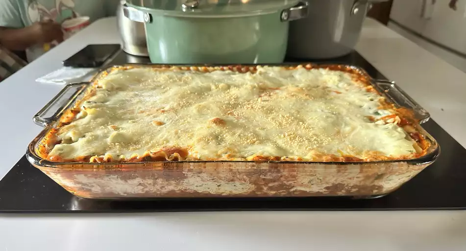

Рецепт лазаньи

Описание
Когда Джон Чендлер представил этот рецепт лазаньи в Allrecipes более 20 лет назад, он понятия не имел, насколько
успешным он станет. Один из наших лучших рецептов всех времен, World's Best Lasagna, набирает более 7 миллионов
просмотров в год и вот уже два десятилетия входит в число самых популярных рецептов лазаньи в Интернете. К
сожалению, Джон неожиданно скончался в возрасте 53 лет — читайте все о его жизни и наследии здесь.
Приготовьте нашу самую популярную лазанью сегодня, чтобы узнать, из-за чего весь сыр-бор!
Как приготовить лазанью
Приготовление лазаньи может занять много времени, но результат того стоит. Подробный список ингредиентов и
пошаговые инструкции вы найдете в рецепте ниже, но давайте перейдем к основам:
Ингредиенты
- Мясо: В этой супер мясистой лазанье есть сладкая итальянская колбаса и нежирный говяжий фарш.
- Лук и чеснок: Луковица и два зубчика чеснока готовятся вместе с мясом, придавая ему неповторимый вкус.
- Томатные продукты: Вам понадобится банка измельченных помидоров, две банки томатного соуса и две банки
томатной пасты.
- Сахар: Две столовые ложки белого сахара придают соусу едва уловимую сладость и усиливают вкус.
- Специи и приправы: В этот рецепт лазаньи входят свежая петрушка, сушеные листья базилика, соль, итальянская
приправа, семена фенхеля и черный перец.
- Лапша для лазаньи: Используйте магазинную или домашнюю лапшу для лазаньи.
- Сыры: Пармезан, моцарелла и сыр рикотта придают этой лазанье особую изысканность.
- Яйцо: Яйцо помогает перевязать рикотту, чтобы она не вытекала из лазаньи при нарезании.
Как приготовить лазанью шаг за шагом
- Приготовьте мясной соус.
- Приготовьте лапшу.
- Приготовьте смесь из рикотты.
- Выложите лазанью слоями в соответствии с инструкциями по рецепту.
- Накройте фольгой и запекайте.
- Перед подачей дайте лазанье отдохнуть.